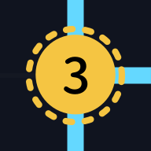

数桥
Hashi
☰
生成
🎲
×
✦ 生成
预设
7×7
18×18
50×50
128×128
256×256
操作
🧩 求解
✓ 检查
🔪 美工刀
💡 辅助
🧹 清桥
📂 导入
📥 CSV
🖼️ 图片
0 / 0
ⓘ
数桥 · Hashiwokakero
状态
就绪
种子
—
版本
v—
制作:
DeepSeek
设计:
AuthorZiXi
源码:
GitHub · hashi/
隐私政策
2026/10/2
🎛️ 视觉配置
重置默认
格子大小(px)
桥宽(px)
坐标大小(px)
岛屿大小(比例)
画布边距(px)
📊 游戏状态
刷新
就绪
📍 显示孤立岛
🔗 强制连通
📋 输出状态到控制台